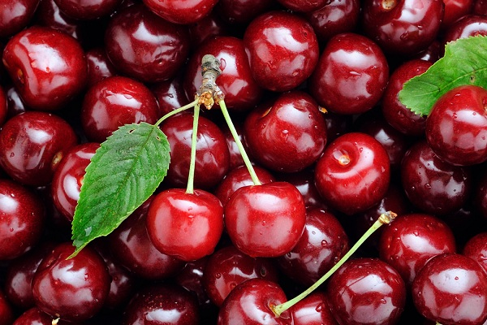
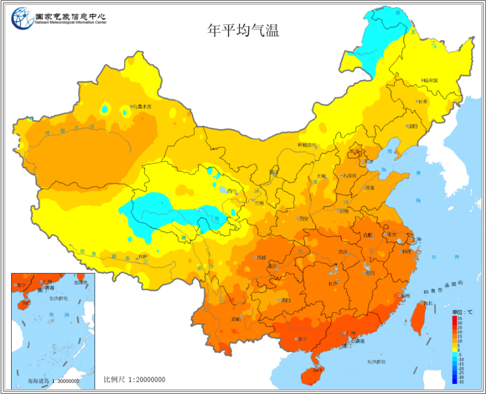
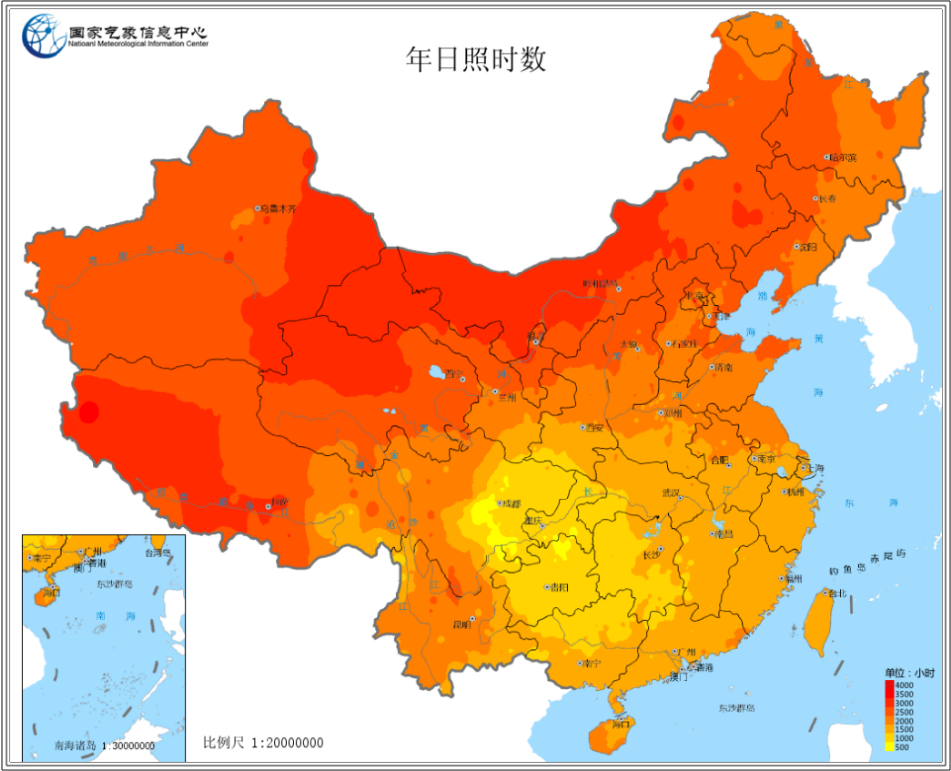
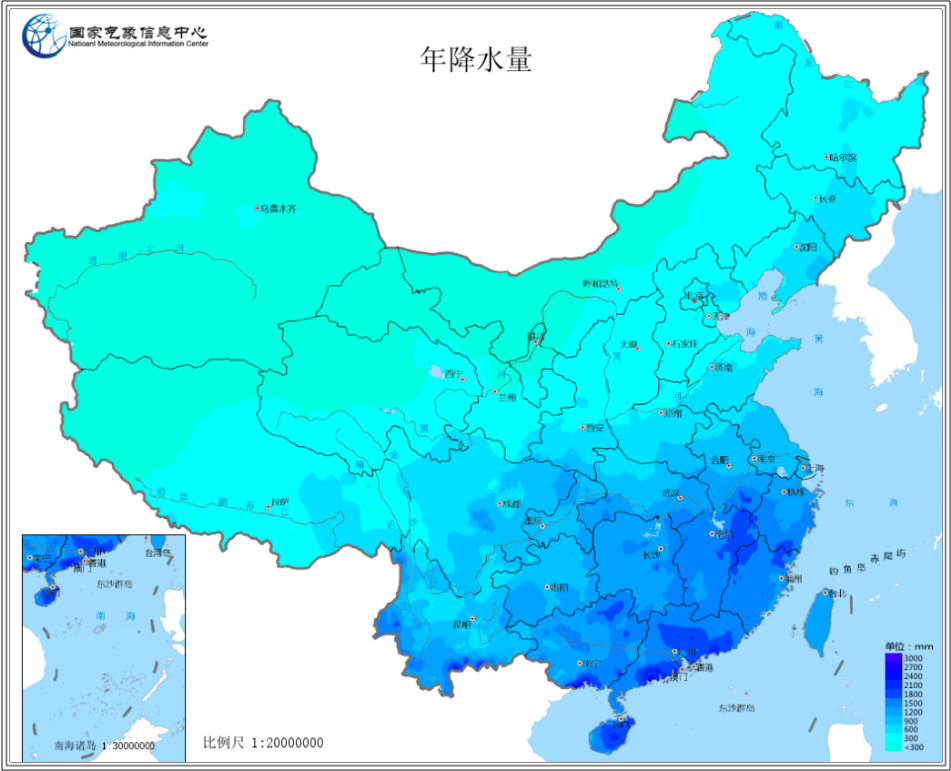

Cherry¶
蔷薇科李属 樱桃 恩桃
樱桃¶
在中国古代，樱桃指的就是我们国产樱桃或者叫 中国樱桃，中国樱桃相比 车厘子 开花更早一些，果实成熟也早一些，果比较小，不耐储藏和运输，腐烂得很快，但是欧洲甜樱桃是比较耐运输的，果肉比较紧实，运输过程中也不容易碰烂。口味上，欧洲甜樱桃更好一些，个头也大，卖相比较好。

Note
山东省是我国樱桃主产区之一(山东烟台产量占全国约2/3)，辽宁、四川、陕西、甘肃、贵州都有大面积种植
四川樱桃¶
大红灯 拉宾斯 龙冠 龙袍
四川的樱桃大部分是四月中旬左右开始成熟，也有比较早的三月下旬就可以吃到。
汉源、蒲江、泸定、茂县、简阳、汶川、攀枝花米易等地都是四川的樱桃的产区。而且很多地方每年在四五月间还会举办樱桃节。
攀枝花 米易的 黄草樱桃 可以算是樱桃界颗明珠。四川简阳市樱桃沟旅游区有川内“赏樱花、吃樱桃”第一去处美誉。
Hint
现在国内大部分栽培的都是欧洲甜樱桃，山东、河北种的个头很大的樱桃其实也都是车厘子。
车厘子¶
我国从 1980 年之后就开始尝试引进车厘子进行种植，但是由于进口品种水土不服，车厘子的产量和品质都比较不尽人意，因此国产车厘子在市场上始终不如进口的受欢迎。
温度¶
15 ℃
车厘子适宜种植的在年平均气温 15 ℃ 左右的地方种植，根据全国年平均气温地图可以看出，15 ℃的曲线主要也是在环渤海、山西、陕西、四川、贵州，如果再考虑到降水和光照，适宜的地区就更少了。
实际上环渤海地区的山东、辽宁等省份也一直是我国车厘子主要的产区，主要集中在大连和烟台， 贵州省安顺镇宁县 也盛产车厘子，是我国南方少有的车厘子产区。
南方地区的年平均气温较高，导致车厘子生长期间的需冷量不够，因此结果不顺利，严重影响产量，不适宜以生产为目的进行种植。
光照¶
2600h
车厘子喜光耐荫，适宜的光照时长能促使果实成熟和糖分聚集，对车厘子品质的影响较大。车厘子种植要求的日照条件是年日照时长达到 2600 个小时，不超过 3000 个小时为宜。 根据地图可知北方气候干爽，日照时长相对适宜车厘子种植，南方多云多雨日照时间较短。
降水¶
600 – 1000 mm
厘子不耐旱不耐涝，根本原因是其根系浅对水分的吸收能力弱，同时又因为叶片大蒸发量大，水分消耗得多，所以车厘子种植时要人为持续保水。降水量上主要是不能太多引起涝害，具体则是年降水量 600 – 1000 毫米的地区比较适宜种植。
Note
车厘子不易长久储存，水分丧失后不仅卖相差口感也会受影响，所以地理条件中还有一点要求即交通方便。